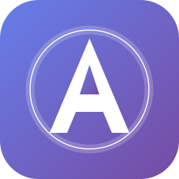
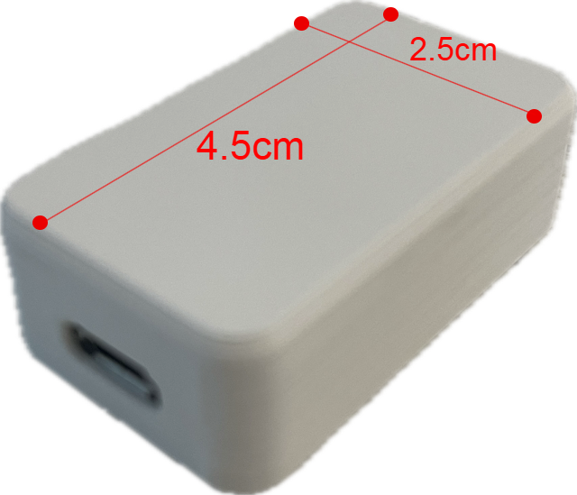

강력한 기계식 단축키 매크로 프로그램

초소형 USB 기계식 입력 장치
키보드 키를 순서대로 자동 입력합니다. 반복, 홀드, 1회 모드를 지원합니다. 키 사이 딜레이를 개별 설정할 수 있습니다.
좌표 지정 클릭, 우클릭, 더블클릭, 드래그를 지원합니다. Shift+클릭 같은 수식키 조합도 가능합니다.
한글, 영문, 숫자, 특수문자를 자동으로 타이핑합니다. 대화창에 메시지를 자동 입력할 수 있습니다.
특정 프로그램 창에서만 매크로가 동작합니다. 다른 창으로 전환하면 자동 일시정지됩니다.
단축키를 눌러도 해당 키가 프로그램에 전달되지 않습니다. 게임 내 기능 충돌을 방지합니다.
전용 하드웨어를 통한 고속 입력을 지원합니다. 사람보다 빠르고 정확한 키 입력이 가능합니다.
제공된 USB 장치를 컴퓨터에 연결합니다.
위의 다운로드 버튼을 클릭하여 설치 파일을 다운로드하고 실행합니다.
바탕화면의 Archon Macro 아이콘을 더블클릭하여 실행합니다. 관리자 권한 요청에서 '예'를 클릭하세요.